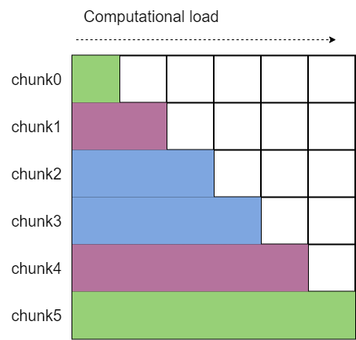
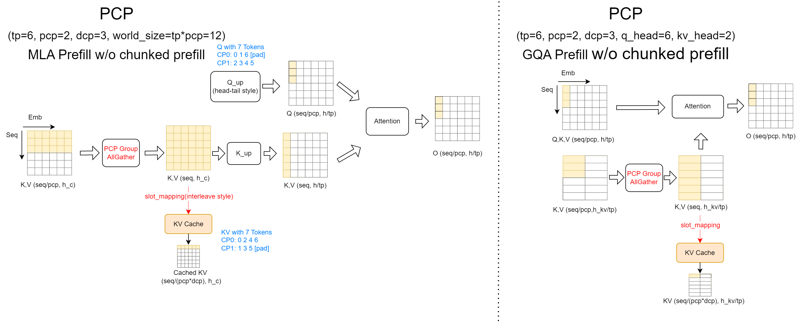
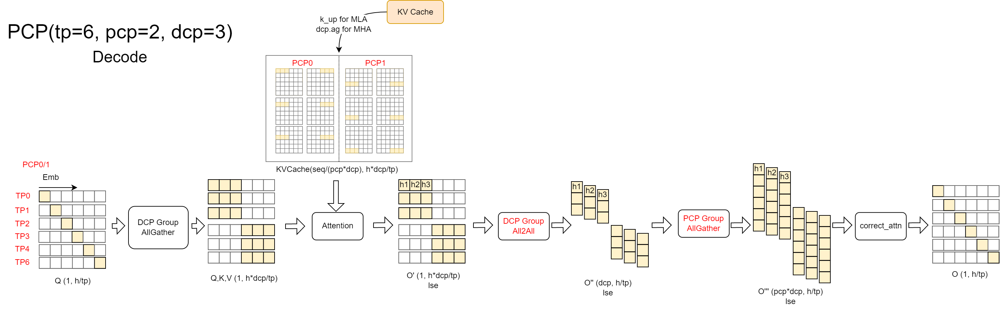

Home · Study · Prefill Context ParallelPrefill Context Parallel
PCP splits a long prompt's tokens across ranks to cut TTFT. The merged implementation is not the ring-attention design the RFCs describe: it shards the query tokens, all-gathers the KV every layer, and therefore needs no LSE merge at all. This note traces the code at a pinned SHA, explains what happens to the KV cache, and separates the measured numbers from the headline one. PCP 는 긴 프롬프트의 토큰을 여러 rank 에 나눠 TTFT 를 줄입니다. 머지된 구현은 RFC 가 설명하는 ring attention 방식이 아닙니다. 쿼리 토큰을 쪼개고 KV 는 레이어마다 all-gather 하므로 LSE 병합이 아예 필요 없습니다. 이 글은 고정된 SHA 기준으로 코드를 따라가고, KV 캐시에 무슨 일이 벌어지는지 설명하며, 실측값과 홍보 수치를 구분합니다.
Time to first token — how long the user waits before anything appears. It is dominated by prefill, which is where PCP works.첫 토큰까지 걸리는 시간입니다. 사용자가 아무것도 못 보고 기다리는 구간이며, 프리필이 대부분을 차지합니다. PCP 가 손대는 곳이 바로 여기입니다.
Splitting the sequence across GPUs, as opposed to splitting heads (TP) or layers (PP). PCP does it for prefill, DCP for decode.head 를 쪼개는 TP 나 레이어를 쪼개는 PP 와 달리 시퀀스를 GPU 들에 나누는 방식입니다. 프리필에 적용하면 PCP, 디코드에 적용하면 DCP 입니다.
Cut the sequence into 2P chunks and give rank i chunks i and 2P−1−i, so each rank gets one cheap and one expensive chunk. The code calls it DualChunkSwap.시퀀스를 2P 조각으로 자른 뒤 rank i 에게 i 번째와 2P−1−i 번째를 주어, 각 rank 가 싼 조각과 비싼 조각을 하나씩 갖게 하는 방식입니다. 코드에서는 DualChunkSwap 이라 부릅니다.
When the keys are split, each rank's softmax has a different denominator, so outputs must be recombined using their log-sum-exp. PCP prefill does not need this; DCP decode does.키를 나누면 rank 마다 softmax 분모가 달라지므로, log-sum-exp 값을 써서 출력을 다시 합쳐야 합니다. PCP 프리필에는 필요 없고, DCP 디코드에는 필요합니다.
Multi-head Latent Attention: one compressed latent per token instead of per-head K and V. Small enough that all-gathering it every layer is affordable — which is why PCP is MLA-only.토큰마다 head 별 K·V 대신 압축된 latent 하나를 두는 방식입니다. 레이어마다 all-gather 해도 감당할 만큼 작고, PCP 가 MLA 전용인 이유가 이것입니다.
Running prefill and decode on separate engines. PCP is recommended only on the prefill side, because decode work is replicated across PCP ranks.프리필과 디코드를 별도 엔진에서 돌리는 구성입니다. 디코드 작업이 PCP rank 전체에 복제되므로, PCP 는 프리필 쪽에만 켜도록 권고됩니다.
Prefill attention costs O(s²) in the prompt length. Tensor parallelism cuts per-GPU FLOPs by sharding heads, but it has two limits that long prompts run straight into. 프리필 어텐션 비용은 프롬프트 길이 기준 O(s²) 입니다. 텐서 병렬은 head 를 쪼개 GPU 당 연산량을 줄이지만, 긴 프롬프트에서 바로 부딪히는 한계가 둘 있습니다.
TP splits the head dimension, not the token dimension. The s² term does not shrink; only the per-head width does.TP 가 쪼개는 것은 head 차원이지 토큰 차원이 아닙니다. s² 항은 줄지 않고 head 폭만 좁아집니다.
Past H KV heads, the KV cache simply replicates tp/H times. For MLA, H = 1 — so TP8 replicates the KV cache eight times.KV head 개수 H 를 넘어서면 KV 캐시가 tp/H 번 복제될 뿐입니다. MLA 는 H = 1 이므로 TP8 이면 KV 캐시가 여덟 배로 복제됩니다.
PCP attacks the token dimension instead, so the per-GPU prefill cost falls roughly linearly with pcp_size. The price is GPUs: unlike DCP, PCP multiplies the world size — world_size = PP × TP × PCP. A fair comparison therefore holds total GPUs fixed and trades TP degree for PCP degree, which is what every benchmark in §4 does.
PCP 는 대신 토큰 차원을 공략하므로, GPU 당 프리필 비용이 pcp_size 에 대략 반비례해 줄어듭니다. 대가는 GPU 개수입니다. DCP 와 달리 PCP 는 world size 자체를 늘립니다. world_size = PP × TP × PCP 입니다. 그래서 공정한 비교는 총 GPU 수를 고정하고 TP 차수를 PCP 차수와 맞바꾸는 방식이며, 4장의 모든 벤치마크가 그렇게 되어 있습니다.
Cutting the prompt into N contiguous pieces would be badly unbalanced: under a causal mask, a token near the end attends to far more keys than one near the start, so the rank holding the tail does most of the work. The fix is to pair a head chunk with a tail chunk. 프롬프트를 연속된 N 조각으로 자르면 부하가 크게 치우칩니다. causal 마스크 아래에서는 뒤쪽 토큰일수록 봐야 할 키가 훨씬 많아, 꼬리를 맡은 rank 가 대부분의 일을 하게 됩니다. 해법은 머리 조각과 꼬리 조각을 짝지어 주는 것입니다.

Why head/tail pairing balances the load. The bars are each chunk's attention work under the causal mask. With pcp_size = 3 the sequence becomes 6 chunks and the colours show the pairing: chunk0+chunk5, chunk1+chunk4, chunk2+chunk3 — each rank gets one cheap and one expensive chunk, so the totals match.머리·꼬리 짝짓기가 부하를 맞추는 원리입니다. 막대는 causal 마스크 아래에서 각 조각이 해야 할 어텐션 연산량입니다. pcp_size = 3 이면 시퀀스가 6조각이 되고, 색이 짝을 보여 줍니다. chunk0+chunk5, chunk1+chunk4, chunk2+chunk3 으로 묶여 각 rank 가 싼 조각과 비싼 조각을 하나씩 받으므로 합이 같아집니다.
Source: vllm-ascend CP design doc @ b909a47 (local mirror)
_iter_rank_chunks and calls it DualChunkSwap. The diagram above is from the Ascend fork's documentation; the pairing it shows matches the upstream code.
문헌에서는 이 짝짓기를 zigzag 라고 부릅니다(ring attention 연구에서 나온 말입니다). 상류 vLLM 코드는 그 단어를 전혀 쓰지 않고, 같은 짝짓기를 _iter_rank_chunks 에 구현하면서 DualChunkSwap 이라 부릅니다. 위 그림은 Ascend 포크의 문서에서 가져왔으며, 그림이 보여 주는 짝짓기는 상류 코드와 일치합니다.
This is the part that differs from the RFCs and from most descriptions you will find. Before attention runs, each layer all-gathers the newly computed KV latent across the PCP group. Only then does attention run. 여기가 RFC 와도 다르고, 검색으로 찾을 수 있는 대부분의 설명과도 다른 지점입니다. 어텐션이 돌기 전에 각 레이어가 이번에 계산된 KV latent 를 PCP 그룹 전체에 all-gather 합니다. 그러고 나서야 어텐션이 돕니다.

PCP prefill dataflow. Left (MLA): K,V (seq/pcp, h_c) goes through PCP Group AllGather to become K,V (seq, h_c) — the full sequence — while Q_up applies the head-tail style split (7 tokens → CP0 gets 0 1 6, CP1 gets 2 3 4 5). Attention then runs normally. Right: the same shape for GQA, which is not merged upstream.PCP 프리필의 데이터 흐름입니다. 왼쪽 MLA 경로에서 K,V (seq/pcp, h_c) 가 PCP Group AllGather 를 거쳐 전체 시퀀스인 K,V (seq, h_c) 가 되고, Q_up 은 head-tail style 로 쪼갭니다(토큰 7개 기준 CP0 이 0·1·6, CP1 이 2·3·4·5). 그 뒤 어텐션이 평범하게 돕니다. 오른쪽은 GQA 에 대한 같은 구조인데, 상류에는 머지되지 않았습니다.
Source: vllm-ascend CP design doc @ b909a47 (local mirror)
cp_lse_ag_out_ar, dcp_a2a_lse_reduce) belongs to DCP and runs during decode. Hidden states are all-gathered back into global batch order just before sampling.
어텐션 이전에 KV 가 완전해지므로, 각 rank 의 쿼리는 키 전체에 대해 어텐션합니다. 따라서 softmax 분모가 이미 올바르고, 각 rank 의 출력은 그 자체로 최종값이어서 다른 rank 의 부분 결과와 합칠 일이 없습니다. PCP 프리필에는 ring 도 LSE 병합도 없습니다. vLLM 에 실제로 존재하는 LSE 관련 코드(cp_lse_ag_out_ar, dcp_a2a_lse_reduce)는 DCP 소속이고 디코드에서 돕니다. 은닉 상태는 샘플링 직전에 전역 배치 순서로 다시 all-gather 됩니다.
This also explains the MLA-only restriction. MLA stores one compressed latent per token, so all-gathering it every layer is cheap. For MHA or GQA you would be moving full per-head K and V across the group at every layer, which is why the GQA path (right half of the figure) remains unmerged. MLA 전용 제약도 여기서 설명됩니다. MLA 는 토큰당 압축된 latent 하나만 저장하므로 레이어마다 all-gather 해도 쌉니다. MHA 나 GQA 였다면 head 별 K·V 전체를 레이어마다 그룹 전체에 주고받아야 하고, 그래서 그림 오른쪽의 GQA 경로가 아직 머지되지 않은 상태로 남아 있습니다.
The surprising answer: PCP does not shard the KV cache. It replicates it. The config field says so in one sentence. 뜻밖의 답은 이렇습니다. PCP 는 KV 캐시를 샤딩하지 않습니다. 복제합니다. 설정 필드가 한 문장으로 밝히고 있습니다.
prefill_context_parallel_size: int = Field(default=1, ge=1)
"""Number of ranks that split prefill sequence computation. PCP expands
the process world size but does not increase the KV-cache shard count."""— vllm/config/parallel.py L143-145 @ 0d2689e
| Question질문 | Answer답 |
|---|---|
| Which rank writes which KV entries?어느 rank 가 어떤 KV 를 쓰는가 | Every rank writes every entry. The per-layer all-gather happens before the cache write, so each rank fills its own complete replica.모든 rank 가 모든 항목을 씁니다. 레이어별 all-gather 가 캐시 기록보다 먼저 일어나므로, 각 rank 가 자기 몫의 완전한 사본을 채웁니다. |
| Sharded or replicated?샤딩인가 복제인가 | Replicated — unless DCP is also on (see below).복제입니다. 다만 DCP 를 함께 켜면 달라집니다(아래 참조). |
| Is there a prefill→decode redistribution?프리필에서 디코드로 넘어갈 때 재배치가 있는가 | No. None exists — and this was searched for specifically, not merely missed. Nothing was split, so nothing needs merging.없습니다. 일부러 찾아본 결과 실제로 부재하는 것이지 누락이 아닙니다. 나눈 적이 없으니 합칠 것도 없습니다. |
| What does PCP cost, then?그러면 PCP 는 무엇을 지불하는가 | Memory, not time. Each PCP rank holds a full cache, so usable KV capacity falls — measured at −33% to −18× depending on config.시간이 아니라 메모리입니다. PCP rank 마다 완전한 캐시를 들고 있으므로 쓸 수 있는 KV 용량이 줄어듭니다. 구성에 따라 33% 감소에서 18배 감소까지 측정되었습니다. |
The two axes are orthogonal because they own different things. PCP decides who computes which prompt tokens; DCP decides who stores which KV tokens. The code enforces the separation: the total CP world size counts only DCP, and the only mode in which PCP ranks hold distinct KV is when DCP is also greater than 1. 두 축이 직교하는 이유는 소유하는 대상이 다르기 때문입니다. PCP 는 누가 어떤 프롬프트 토큰을 계산할지를 정하고, DCP 는 누가 어떤 KV 토큰을 저장할지를 정합니다. 코드가 이 분리를 강제합니다. 전체 CP world size 는 DCP 만 세고, PCP rank 들이 서로 다른 KV 를 갖는 경우는 DCP 가 1보다 클 때뿐입니다.
total_cp_world_size = dcp_world_size # PCP 는 빠져 있다
pcp_dcp_sharded = pcp > 1 and dcp > 1 # 이때만 PCP rank 별 KV 가 달라진다
유효한 DCP 크기 = { 1, PCP, TP × PCP }
Decode under PCP. There is no sequence to split any more, so decode work is simply replicated across PCP ranks — the structural reason PCP is recommended only on the prefill side of a P/D split.PCP 아래에서의 디코드입니다. 나눌 시퀀스가 더 이상 없으므로 디코드 작업은 PCP rank 전체에 그냥 복제됩니다. PCP 를 P/D 분리의 프리필 쪽에만 켜도록 권고하는 구조적 이유가 이것입니다.
Source: vllm-ascend CP design doc @ b909a47 (local mirror)
The vLLM blog's headline is 2.65× prefill speedup at 32K (PCP8 vs TP8). That figure appears in prose only, with no hardware, methodology or sample count, and it is the outlier. The numbers that come with tables are more modest. vLLM 블로그의 대표 수치는 32K 에서 PCP8 이 TP8 대비 프리필 2.65배 입니다. 이 값은 서술 문장으로만 등장하고 하드웨어와 방법론, 표본 수가 없으며, 다른 측정값들과 동떨어져 있습니다. 표가 붙어 있는 수치들은 더 완만합니다.
| Setting조건 | Baseline기준 | PCP | Gain이득 | Status상태 |
|---|---|---|---|---|
| 32K prompt (blog) | TP8 | PCP8 | 2.65× | prose only |
| 100K input, TTFT | TP4 — 6.015 s | TP1+PCP4+EP4 — 2.859 s | 2.10× | merged #46570 (n=3, "smoke check")(표본 3건, 자체 표기 "smoke check") |
| 100K input, no EP | TP4 — 6.015 s | TP1+PCP4 — 3.996 s | 1.51× | merged #46570 |
| 32K prompt, Hy3-290B | 1973 ms | TP1+PCP8 — 1682 ms | 1.17× | open #49564 |
| 32K + DCP stacked | 1973 ms | TP1+PCP8+DCP8 — 2123 ms | worse than baseline기준보다 나쁨 | open #49564 |
| 4K prompt, Qwen3-30B (GQA) | TP4 — 96 ms | TP1+PCP4 — 110 ms | PCP is slowerPCP 가 더 느림 | GQA not merged |
Long prefills, TTFT-bound, on dedicated prefill workers (the P side of a P/D split). Models where TP shards badly — MLA with one KV head, sparse attention. Stated independently in the vLLM blog, PR #28988 and the Ascend guide.긴 프리필에 TTFT 가 병목이고, 프리필 전용 워커(P/D 분리의 P 쪽)에서 돌릴 때입니다. TP 로 잘 쪼개지지 않는 모델, 즉 KV head 가 하나인 MLA 나 희소 어텐션도 해당합니다. vLLM 블로그와 PR #28988, Ascend 가이드가 각각 독립적으로 같은 말을 합니다.
Short prompts — below ~4K it is measurably slower than TP. Decode-heavy traffic — decode is replicated, so TPOT always gets worse. And do not stack DCP on top expecting both wins; measured, it erased the entire TTFT gain.짧은 프롬프트입니다. 약 4K 미만에서는 TP 보다 느린 것이 측정되었습니다. 디코드 비중이 큰 트래픽도 맞지 않습니다. 디코드가 복제되므로 TPOT 이 항상 나빠집니다. 그리고 두 이득을 다 얻겠다고 DCP 를 위에 얹지 마십시오. 측정 결과 TTFT 이득이 전부 사라졌습니다.
# 총 GPU 수를 고정한 채 TP 차수를 PCP 차수와 맞바꾼다
vllm serve <model> --tensor-parallel-size 1 --prefill-context-parallel-size 4
# P/D 분리라면 프리필(kv_producer) 엔진에만 켠다. 디코드 엔진은 반드시 1 로 둔다.| PR | What내용 | State상태 |
|---|---|---|
| #28718 | basic PCP기본 PCP | merged 2025-11-19 |
| #46570 | MRV2 virtual-batch PCP for MLAMLA 용 MRV2 virtual-batch PCP | merged 2026-07-19 |
| #57075 | PCP with data parallelism데이터 병렬과 함께 사용 | merged 2026-09-24 |
| #52162 | decode sharding디코드 샤딩 | merged 2026-10-02 |
| #59304 | KCP for GLM KDA linear attentionGLM KDA 선형 어텐션용 KCP | open — no code in tree |
| #49564 | GQA pathGQA 경로 | open (#46330 closed) |
| #60538 | hang fix: short prefills replicated only when DCP>1행 버그 수정: 짧은 프리필이 DCP>1 일 때만 복제됨 | open — NCCL timeout trace attached |
Constraints as merged: MLA only, V2 runner only. Not compatible with multimodal, LoRA, sliding-window attention, Mamba, or encoder-decoder models. No mixed FULL CUDA graphs. PCP+DCP additionally requires sparse MLA and the ag_rs path. CI gates it with three GSM8K configs.
머지된 기준의 제약: MLA 전용이고 V2 러너 전용입니다. 멀티모달과 LoRA, sliding-window 어텐션, Mamba, encoder-decoder 모델과 함께 쓸 수 없습니다. 혼합 FULL CUDA 그래프도 안 됩니다. PCP 와 DCP 를 함께 쓰려면 sparse MLA 와 ag_rs 경로가 추가로 필요합니다. CI 는 GSM8K 설정 세 가지로 이 기능을 검증합니다.
DCP = PCP × TP forces an extra TP-wide all-gather before KV insertion (#46358). Second, whether sequence parallelism was enabled in #46570's TP baseline — if it was not, that table's apples-to-apples claim has a real gap. Also note that vllm-ascend published zero PCP benchmark numbers; its contribution here is the documentation and the diagrams above, and its merged PR has an empty test section. Keep its design docs and upstream's performance claims separate.
해당 스레드에서 답을 받지 못한 리뷰어 질문이 둘 있고, 벤치마크 전에 알아 둘 가치가 있습니다. 첫째로 DCP = PCP × TP 조합이 KV 삽입 전에 TP 전역 all-gather 를 추가로 강제하는지입니다(#46358). 둘째로 #46570 의 TP 기준선에서 시퀀스 병렬이 켜져 있었는지입니다. 켜져 있지 않았다면 그 표의 동일 조건 비교 주장에 실제 구멍이 있습니다. 그리고 vllm-ascend 는 PCP 벤치마크 수치를 하나도 공개하지 않았습니다. 여기서의 기여는 위 그림과 문서이며, 머지된 PR 의 테스트 항목은 비어 있습니다. 이 포크의 설계 문서와 상류의 성능 주장은 구분해서 읽어야 합니다.
0d2689e0dfd5e9f74f361cab7701df0feee33ef3 (2026-10-13).b909a47 (PCP was removed from that doc in July 2026)(해당 문서에서 PCP 는 2026년 7월에 삭제되었습니다)